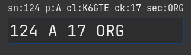

Contest Specific Notes
I found it might be beneficial to have a section devoted to weird quirky things about operating a specific contests.
ARRL Sweekstakes
The Exchange Parser
This was a pain in the tukus. There are so many elements to the exchange, and one input field aside from the callsign field. So I had to write sort of a ’parser’. The parser moves over your input string following some basic rules and is re-evaluated with each keypress and the parsed result will be displayed in the label over the field. The exchange looks like ‘124 A K6GTE 17 ORG‘, a Serial number, Precidence, Callsign, Year Licenced and Section. even though the callsign is given as part of the exchange, the callsign does not have to be entered and is pulled from the callsign field. If the exchange was entered as ‘124 A 17 ORG‘ you would see:

You can enter the serial number and precidence, or the year and section as pairs. For instance ‘124A 17ORG‘. This would ensure the values get parsed correctly.
You do not have to go back to correct typing. You can just tack the correct items to the end of the field and the older values will get overwritten. So if you entered ‘124A 17ORG Q‘, the precidence will change from A to Q. If you need to change the serial number you must append the precidence to it, ‘125A‘.
If the callsign was entered wrong in the callsign field, you can put the correct callsign some where in the exchange. As long as it shows up in the parsed label above correctly your good.
The best thing you can do is play around with it to see how it behaves.
ARRL 10M
RAEM
In the New/Edit Contest dialog, in the exchange field put just your Lat and Lon. for me 33N117W. And in the exchange macro put ‘# {EXCH}‘.